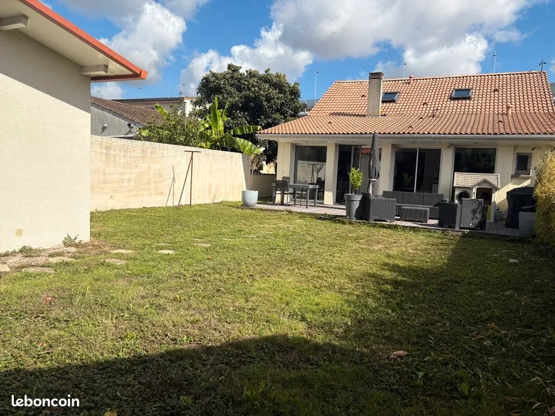

Maison T4 avec jardin parking et bureau - Bordeaux Bacalan
Chemin lafitte, Bordeaux

Informations
- Statut
- Terminé
- Adresse
- Chemin lafitte, Bordeaux
- Bien
- Maison T4 avec jardin parking et bureau
- Année
- 1930
- Taxe foncière
- 1 589 €
- Vendeur
- Antoine BLACHON, CAPIFRANCE
- Téléphone
- +33 6 60 91 73 40
- Date
- 2026-06-28
Description
Suivi
| Date | Historique |
|---|---|
| 2026/06/28 | Message envoyé pour recevoir la localisation |
Maison à vendre 4 pièces BORDEAUX (33)
À vendre – Maison familiale 115 m² – Bordeaux Bacalan
Située au cœur du quartier en plein essor de Bordeaux-Bacalan, découvrez cette maison familiale de 115 m² habitables rénovée en 2013, qui allie confort, fonctionnalité et extérieur agréable.
Caractéristiques du bien :
Maison à étage ;
Au rez de chaussée : un grand séjour lumineux, une cuisine ouverte toute équipée, une chambre, un bureau et un wc
A l'étage, 2 chambres spacieuses, salle de bains et wc
Jardin au calme à l'arrière avec abri de jardin, idéal pour les beaux jours
Jardin d'accueil à l'avant avec possibilité de stationner deux véhicules
Les atouts du secteur :
Le quartier Bacalan bénéficie d'un renouveau dynamique, avec la proximité immédiate des bassins à flot, de la Cité du Vin, des transports en commun (tram et bus), des commerces de proximité et des écoles. Un cadre de vie mêlant authenticité, modernité et convivialité, tout en restant à quelques minutes seulement du centre-ville de Bordeaux.
Proche de toutes les commodités et accès rocade rapide :
A proximité, lignes de bus (9-75-76), école maternelle et primaire, tabac/presse, boulangeries, piscine municipale...
A 10/15 minutes à pied, Tram B, pharmacie, banques ...
A 5 minutes en voiture de la zone commerciale de Bordeaux Lac.
Que vous recherchiez une résidence principale pour votre famille ou un bien avec un potentiel locatif intéressant, cette maison est une belle opportunité à saisir. Les honoraires d'agence sont à la charge de l'acquéreur, soit 2,94% TTC du prix hors honoraires.
Les informations sur les risques auxquels ce bien est exposé sont disponibles sur le site Géorisques : www. georisques. gouv. fr.
Réseau Immobilier CAPIFRANCE - Votre agent commercial (RSAC N°839 907 169 - Greffe de BORDEAUX) Antoine BLACHON Entrepreneur Individuel [Coordonnées masquées] - Réf.946229
Référence annonce : 340933319457
Date de réalisation du diagnostic : 24/09/2025
Prix hors honoraires : 340 000 €
Montant estimé des dépenses annuelles d'énergie pour un usage standard : entre 1 890 € et 2 580 € sur les années 2021, 2022 et 2023 (abonnements compris).